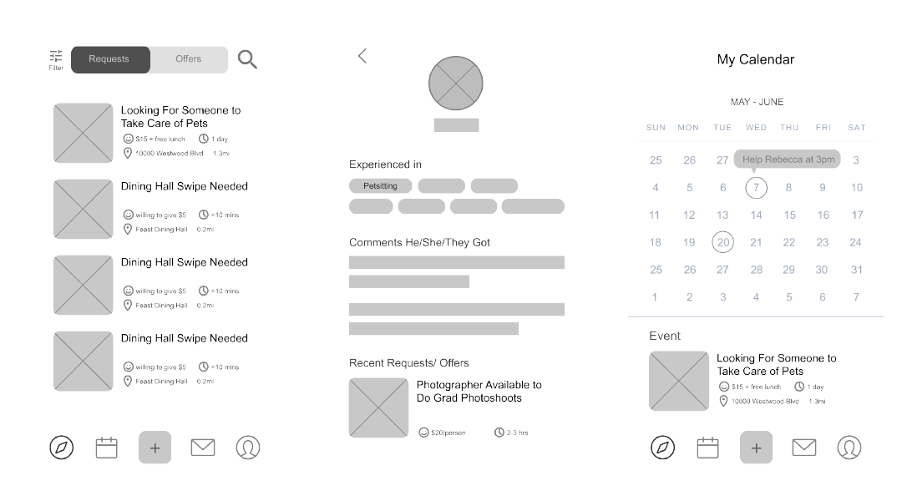
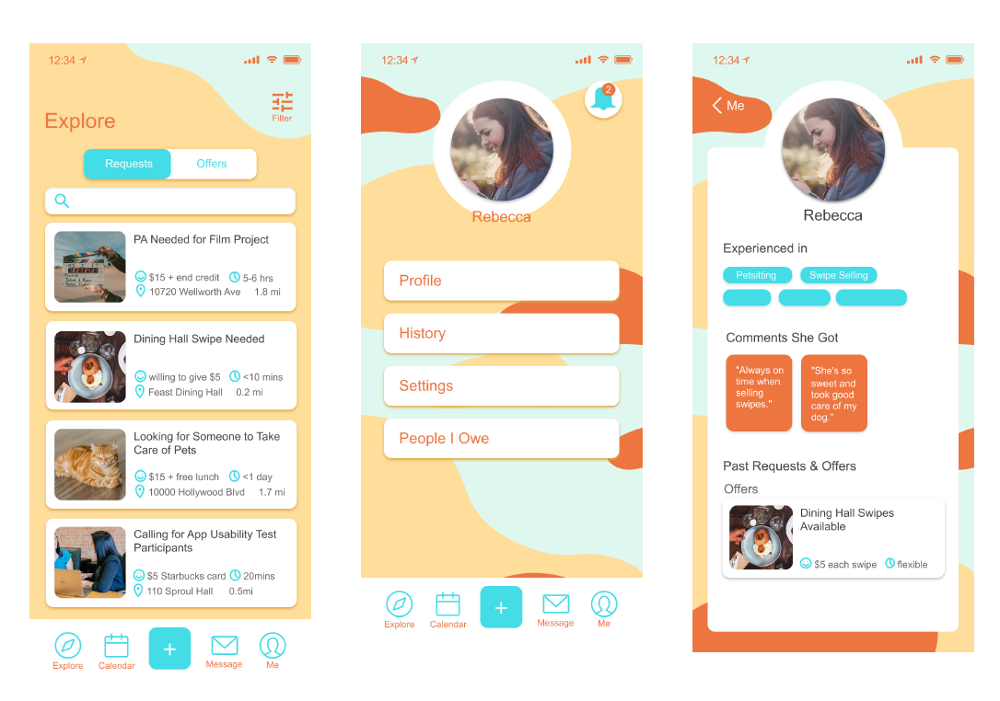

Providing and returning favors is one of the most fundamental process during which people form and maintain all kinds of relationships with each other. Plus, we all have times at which we really need a helping hand. The favor-exchange app allows for people to find help and help others efficiently within their community, with the potential to gain monetary compensations, and more importantly, the opportunity to get to know and initiate exciting new connections with people in their communities.
It’s a Saturday and Rebecca just finished studying in a study lounge near one of the dining halls in UCLA. She doesn’t have anything else to do, but plans to stay in the Lounge for some more time just casually watching shows on her laptop and wait for her friend. It’s almost lunch hour, and Rebecca knows that around this hour, many students who don’t have meal plans would look to “buy a swipe” from others (meaning to pay someone who have meal plans to let them into the dining halls). She wants to know if she can sell some swipes to other students, or get some other opportunities to do someone a favor for money, but she also doesn’t want to go too far from where she is now, just in case her friend comes to find her.
Action:Rebecca opens the favor exchange app on her phone and enables the app to get access to her current location. Then, she opens her setting, click on the “status” button to change her status to “accepting favor requests”. After that, she adjusts the filter for favor requests. She sets the location filter to “0.5 miles around me” and compensation filter to “$5 or above compensation”. Then, she starts to watch a show and wait for request notifications. After 10 minutes, she receives a notification that says “ John is looking for someone to swipe him into Feast dining hall, willing to pay $5 for the favor.” Rebecca checks the map and sees that John is just 100 feet from the lounge. She clicks to accept the request and headed out to look for John. She was glad that she could just get notified of money-making opportunities by this app.
On Thursday afternoon, Subin finally settles her plan to shoot her short film project on Sunday. She had found most of crews she need, but is still short on one person who can hold the Boom microphone during the shoot. All of Subin’s friends already have plans for Sunday. Also, she, as a new transfer, doesn’t know many people in the school yet. She really doesn’t know who else she can ask. Therefore, she decides to give the favor exchange app a try.
Action:Subin opens the favor exchange app, selects UCLA community and clicks on “Add favor request” to fill in a request form. She types in a brief description of the favor needed, saying that a production assistant is needed to help hold the Boom microphone on a film set. She also fills in the approximate time to complete the favor (about 5 hours), the date, time and location the film shoot is happening, and the compensation she is willing to give ($20 + credit at the end of the film). After that, she presses “submit” and the request is posted.
Rebecca, who is just casually browsing favor requests later at Thursday night, saw Subin’s request and sees on the map that Subin’s shooting location is within walking distance from her home. Rebecca thinks it is a great deal and film shooting also sounds fun, so she pressed “I’ll take it” to tell Subin that she would like to take the request.
Subin gets a notification that Rebecca wants to take the request. The app is asking Subin to confirm this deal. She clicks in to check Rebecca’s profile to see whether she is a reliable person. She saw some comments posted by students who had bought swipes from Rebecca, saying that she is always on time and never cancels off a taken favor request last minute. Subin then decides that Rebecca is a responsible person and confirms the deal. Then, Subin uses the messaging function to greet Rebecca and tell her more about the film project.
(following Scenario 2) The film shoot went well on Sunday. It was even better than Subin had expected. Rebecca not only did her job well, but gave some of her sharp and inspiring opinions on Subin’s film as well. During the break, Subin and Rebecca talked about their experiences at UCLA and found each other very pleasurable to talk to.They both genuinely enjoyed working together and even exchanged their contacts. At the end of the day, Subin paid Rebecca $20 and added her to the film credit as promised. Subin was grateful for Rebecca’s help and wants to be able to help Rebecca in the future whenever she needs.
Action:Subin clicks into Rebecca’s profile again, and added Rebecca to the “I owe them” list. Several days later, she receives a notification saying “ Someone that you owe now needs a favor!” She clicks the notification and sees a favor request Rebecca has posted, looking for a 4th year Business-Economics major to discuss career path with her. Subin remembers that her roommate fits those two requirements, so she messages Rebecca and tells her about her roommate. Eventually, Subin helped set up a meeting for Rebecca with her roommate, and Rebecca got a lot of useful information about the Biz-econ major.
Here are some screenshoots of the wireframes
Here are some screenshoots of the final interactive prototype. Please click on the button below the screenshots to see the full interactive version!
A usability test of the latest prototype was conducted, 1 pilot participated in the test and were asked to use the prototype to complete the following 5 tasks.
The following findings have emerged from the data:
Recommended areas of improvement include: